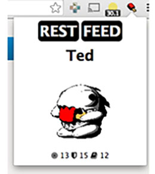

Mea Ola
A Virtual Pet for your Chrome!
What This Game is
Mea Ola (which is Hawaiian), is a two part project. The first, and main part, is a chrome extension. Through your Mea Ola extension, you create a tiny digital pet. This pet reacts to what you browse on the web in one of three ways. He will either gain an intelligence point from sites such as Wikipedia, a skill point from sites like ESPN, or a defense point from Reddit. All you have to do is surf the web as you usually do! He will occasionally become tired or hungry though so you'll have to feed him or put him to sleep by pressing on the appropriate command button in the extension. He also has little animations in your extension for each action he performs!
The second part to the Mea Ola project is an arena. Here, you can challenge your friends pets to challenges such as a soccer match in our Unity environment. Depending on how well trained your pet is, he may be able to jump higher, run faster, or attack stronger than your friends pet.
Where the Game Came from
Mea Ola was created this year during the first ever RIT Brick Hacks, where our team won Major League Hackers Best Game Award. The hackathon was about 28 hours long and open to college students all around the world. In order to create our project we used HTML/CSS, JavaScript, and C#, as well as a server to host user data. Hopefully someday you'll be able to download Mea Ola to your own browser!
The Style of the Game
The main component of our game are these little creatures, which we made round, cartoonish, and adorable. There is a 2D version of the creatures in the extension, but when you go to the arena, they become 3D as well as the environment around them.
